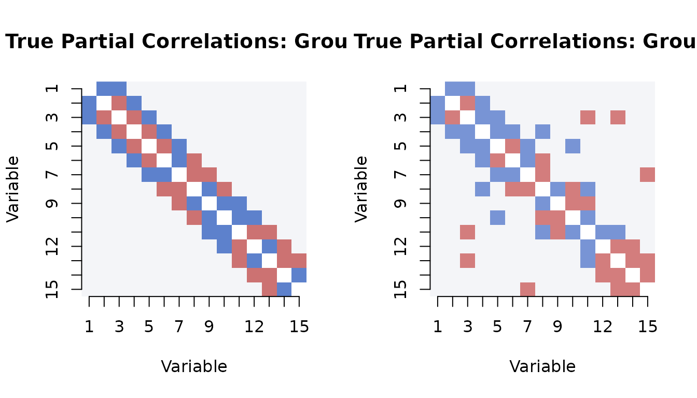
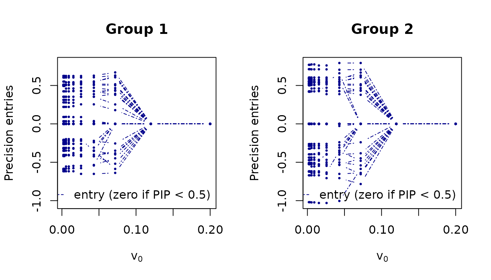
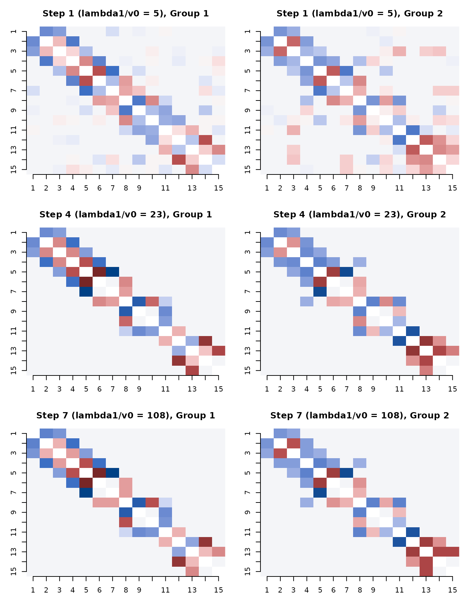
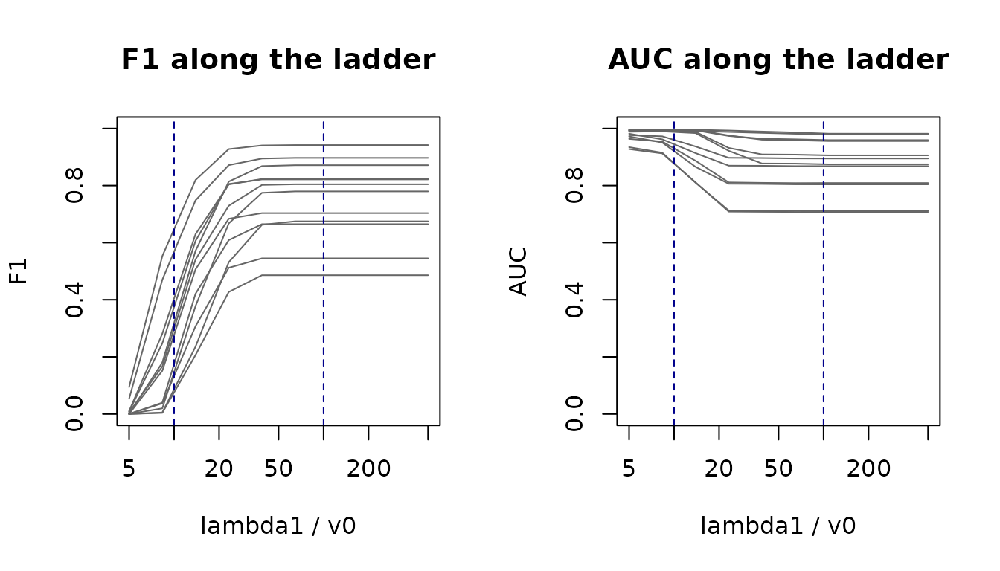

Parameter exploration: understanding the v0 ladder
Source:vignettes/parameter-exploration.Rmd
parameter-exploration.RmdIntroduction
The spike variance v0 controls sparsity in SSJGL,
together with lambda1. This vignette explains what
v0 means in the model, shows how the estimated graph
changes along a ladder of v0 values, and summarises the
simulation study behind the default ladder,
v0s = make_v0_ladder(lambda1).
The spike-and-slab prior on edges
In SSJGL (Li et al., 2019) the spike and the slab are both Laplace (double-exponential) priors on the off-diagonal precision entries , not normal priors on partial correlations. For an edge with inclusion indicator , the sparsity part of the prior is
and the similarity part has the same form with lambda2
and the fused or group penalty. So:
- The spike has rate
lambda1/v0and scalev0/lambda1on the precision entries.v0only matters through the ratiolambda1/v0, which is howmake_v0_ladder()is parameterised.sqrt(v0)is not a standard deviation of anything in the model. - The slab (
v1 = 1) has ratelambda1: a weak penalty that hardly shrinks real edges.
What lambda1/v0 does in the EM
E-step. The posterior log-odds that an edge is in the slab is, for the single spike-and-slab prior,
where
for the fused penalty and
for the group penalty. An edge whose estimate is exactly zero therefore
has PIP
,
which is tiny, while any clearly non-zero entry gets a PIP near 1.
As lambda1/v0 grows, the PIPs become almost binary
and simply mark the support of the estimated precision
matrices.
M-step. The M-step solves the joint graphical lasso
plus edge-wise penalties, with weight about lambda1/v0 for
spike edges and lambda1/v1 for slab edges. A spike edge is
soft-thresholded at about lambda1/(n v0) on the scale of
the sample covariance, which is the sample correlation for standardised
data. For example, with n = 100:
library(spikeyglass)
v0s <- make_v0_ladder(lambda1 = 1) # the default ladder at lambda1 = 1
data.frame(
step = seq_along(v0s),
v0 = signif(v0s, 3),
ratio = round(1 / v0s, 1), # lambda1 / v0
spike_scale = signif(v0s / 1, 3), # v0 / lambda1
threshold_n100 = round(1 / (100 * v0s), 3) # lambda1 / (n v0), n = 100
)
#> step v0 ratio spike_scale threshold_n100
#> 1 1 0.1000 10.0 0.1000 0.100
#> 2 2 0.0316 31.6 0.0316 0.316
#> 3 3 0.0100 100.0 0.0100 1.000Standardise your data
Because the prior acts on precision entries, the meaning of
lambda1 and v0 depends on the variables’
units. Fit with standardize = TRUE so that every variable
has unit variance within each group. Then lambda1 = 1 (the
value used by Li et al., 2019) and the default ladder are sensible
starting points. normalize = TRUE only centres the data and
does not change the estimates. It is kept for back-compatibility.
Simulate data
We generate K = 2 groups with p = 15 variables using a band graph:
sim <- simulate_ssjgl_data(
K = 2, p = 15, n = 100,
graph_type = "band",
perturb_prob = 0.05,
signal = 0.3,
seed = 42
)True partial correlations
The banded structure creates edges on the first and second off-diagonals:
true_pcor <- lapply(sim$Omega_list, precision_to_pcor)
par(mfrow = c(1, 2))
for (k in 1:2) {
mat <- true_pcor[[k]]
diag(mat) <- NA
image(1:15, 1:15, t(mat[15:1, ]),
col = hcl.colors(50, "Blue-Red 3"),
zlim = c(-0.5, 0.5),
main = paste("True Partial Correlations: Group", k),
xlab = "Variable", ylab = "Variable", axes = FALSE)
axis(1, at = 1:15); axis(2, at = 1:15, labels = 15:1)
}
Fitting across a long v0 ladder
To see the whole path, we use a 10-step exploration ladder with
lambda1/v0 from 5 to 500. The default ladder covers 10 to
100 in three steps.
v0s <- make_v0_ladder(lambda1 = 1, n_steps = 10, min_ratio = 5, max_ratio = 500)
data.frame(step = 1:10, v0 = signif(v0s, 3), ratio = round(1 / v0s, 1))
#> step v0 ratio
#> 1 1 0.20000 5.0
#> 2 2 0.12000 8.3
#> 3 3 0.07190 13.9
#> 4 4 0.04310 23.2
#> 5 5 0.02580 38.7
#> 6 6 0.01550 64.6
#> 7 7 0.00928 107.7
#> 8 8 0.00557 179.7
#> 9 9 0.00334 299.7
#> 10 10 0.00200 500.0
fit <- ssjgl(
Y = sim$data_list,
penalty = "fused",
lambda0 = 1,
lambda1 = 1,
lambda2 = 1,
v0s = v0s,
doubly = TRUE,
a = 1, b = 15,
maxitr.em = 100,
tol.em = 1e-4,
standardize = TRUE,
impute = FALSE
)How the solution evolves across v0
Solution path
The solution path shows how individual precision matrix entries are shrunk as v0 decreases:
plot_path(fit$v0s, fit, thres = 0.5, normalize = FALSE,
xlab = expression(v[0]), ylab = "Precision entries",
main = c("Group 1", "Group 2"), par = c(1, 2))
Comparing estimates along the ladder
We compare the estimated partial correlations at the first step
(lambda1/v0 = 5), an intermediate step, and step 7
(lambda1/v0 about 108, close to the end of the default
ladder).
steps_to_show <- c(1, 4, 7)
step_labels <- sprintf("Step %d (lambda1/v0 = %.0f)", steps_to_show,
1 / v0s[steps_to_show])
par(mfrow = c(3, 2), mar = c(3, 3, 3, 1))
for (idx in seq_along(steps_to_show)) {
s <- steps_to_show[idx]
for (k in 1:2) {
pcor_est <- precision_to_pcor(fit$thetalist[[s]][[k]])
diag(pcor_est) <- NA
image(1:15, 1:15, t(pcor_est[15:1, ]),
col = hcl.colors(50, "Blue-Red 3"),
zlim = c(-0.5, 0.5),
main = sprintf("%s, Group %d", step_labels[idx], k),
xlab = "", ylab = "", axes = FALSE)
axis(1, at = 1:15); axis(2, at = 1:15, labels = 15:1)
}
}
Performance at each step
perf <- t(sapply(seq_along(v0s), function(s) {
m <- compute_metrics(fit, sim$adj_list, sim$Omega_list, v0_index = s)
pr <- fit$problist1[[s]][upper.tri(fit$problist1[[s]])]
c(ratio = 1 / v0s[s],
AUC = m$overall$mean_AUC,
F1 = mean(sapply(m$per_group, function(g) g$F1)),
edges = sum(pr > 0.5),
uncertain = sum(pr > 0.1 & pr < 0.9))
}))
round(perf, 3)
#> ratio AUC F1 edges uncertain
#> [1,] 5.000 0.990 NA 0 0
#> [2,] 8.341 0.983 NA 0 0
#> [3,] 13.913 0.958 0.841 21 0
#> [4,] 23.208 0.948 0.913 29 0
#> [5,] 38.713 0.948 0.913 29 0
#> [6,] 64.577 0.942 0.913 29 0
#> [7,] 107.722 0.941 0.913 29 0
#> [8,] 179.691 0.943 0.913 29 0
#> [9,] 299.742 0.935 0.913 29 0
#> [10,] 500.000 0.938 0.913 29 0Early steps (small lambda1/v0) give graded PIPs and a
high AUC, but select few edges at PIP > 0.5. As
lambda1/v0 grows, more PIPs move to 0 or 1. The edge set
then stops changing, and F1 at PIP > 0.5 reaches its plateau.
Which ladder? A simulation study
Three ladder rules were in use: the old default
c(0.1, 0.03, 0.01); the old make_v0_ladder()
default (10 steps, lambda1/v0 from 5 to 500); and the rule
v0 = lambda1 / (lambda1 + 5k), k = 1, 2, 3, used in some
applied work. We compared them on standardised data from
simulate_ssjgl_data(): K = 2, p in {20, 50, 100}, n in
{100, 300} per group, band and scale-free graphs, and 10 replicates per
setting. All fits used the fused penalty,
lambda0 = lambda1 = lambda2 = 1 and b = p. At
lambda1 = 1 the three rules end at lambda1/v0
= 100, 500 and 16. The script is data-raw/v0-ladder-study.R
in the package sources.
Final-step results, averaged over replicates. F1 is at PIP > 0.5,
jaccard_prev is the overlap of the selected edge set with
the previous step’s (1 = the path has stabilised), and
total_seconds is the time per fit:
study <- read.csv(system.file("extdata", "v0_ladder_study.csv",
package = "spikeyglass"))
study$rule <- factor(study$rule, c("old_default", "make_v0_ladder", "dina"),
c("c(.1,.03,.01)", "5-500 (10 steps)", "1/(1+5k)"))
knitr::kable(study[, c("p", "n", "graph", "rule", "AUC", "F1", "edges",
"true_edges", "jaccard_prev", "total_seconds")],
digits = c(0, 0, 0, 0, 3, 3, 0, 0, 2, 0), row.names = FALSE)| p | n | graph | rule | AUC | F1 | edges | true_edges | jaccard_prev | total_seconds |
|---|---|---|---|---|---|---|---|---|---|
| 20 | 100 | band | 1/(1+5k) | 0.894 | 0.671 | 24 | 40 | 0.65 | 15 |
| 20 | 100 | band | 5-500 (10 steps) | 0.868 | 0.823 | 34 | 40 | 1.00 | 19 |
| 20 | 100 | band | c(.1,.03,.01) | 0.929 | 0.873 | 43 | 40 | 1.00 | 9 |
| 20 | 100 | scale-free | 1/(1+5k) | 0.917 | 0.648 | 13 | 22 | 0.53 | 13 |
| 20 | 100 | scale-free | 5-500 (10 steps) | 0.895 | 0.821 | 21 | 22 | 1.00 | 12 |
| 20 | 100 | scale-free | c(.1,.03,.01) | 0.924 | 0.801 | 27 | 22 | 1.00 | 7 |
| 20 | 300 | band | 1/(1+5k) | 0.991 | 0.879 | 36 | 40 | 0.71 | 16 |
| 20 | 300 | band | 5-500 (10 steps) | 0.980 | 0.942 | 43 | 40 | 1.00 | 18 |
| 20 | 300 | band | c(.1,.03,.01) | 0.979 | 0.940 | 44 | 40 | 1.00 | 7 |
| 20 | 300 | scale-free | 1/(1+5k) | 0.995 | 0.785 | 17 | 22 | 0.70 | 11 |
| 20 | 300 | scale-free | 5-500 (10 steps) | 0.982 | 0.897 | 26 | 22 | 1.00 | 16 |
| 20 | 300 | scale-free | c(.1,.03,.01) | 0.978 | 0.897 | 26 | 22 | 0.99 | 6 |
| 50 | 100 | band | 1/(1+5k) | 0.832 | 0.560 | 54 | 122 | 0.54 | 99 |
| 50 | 100 | band | 5-500 (10 steps) | 0.804 | 0.704 | 89 | 122 | 1.00 | 658 |
| 50 | 100 | band | c(.1,.03,.01) | 0.883 | 0.745 | 136 | 122 | 1.00 | 112 |
| 50 | 100 | scale-free | 1/(1+5k) | 0.852 | 0.478 | 31 | 78 | 0.38 | 113 |
| 50 | 100 | scale-free | 5-500 (10 steps) | 0.809 | 0.665 | 60 | 78 | 1.00 | 663 |
| 50 | 100 | scale-free | c(.1,.03,.01) | 0.872 | 0.643 | 100 | 78 | 1.00 | 92 |
| 50 | 300 | band | 1/(1+5k) | 0.991 | 0.649 | 64 | 121 | 0.45 | 90 |
| 50 | 300 | band | 5-500 (10 steps) | 0.959 | 0.871 | 136 | 121 | 1.00 | 110 |
| 50 | 300 | band | c(.1,.03,.01) | 0.964 | 0.871 | 139 | 121 | 0.98 | 58 |
| 50 | 300 | scale-free | 1/(1+5k) | 0.994 | 0.609 | 37 | 75 | 0.44 | 67 |
| 50 | 300 | scale-free | 5-500 (10 steps) | 0.956 | 0.805 | 92 | 75 | 1.00 | 84 |
| 50 | 300 | scale-free | c(.1,.03,.01) | 0.952 | 0.802 | 90 | 75 | 0.97 | 38 |
| 100 | 100 | band | 1/(1+5k) | 0.771 | 0.381 | 74 | 310 | 0.35 | 424 |
| 100 | 100 | band | 5-500 (10 steps) | 0.712 | 0.545 | 148 | 310 | 1.00 | 1087 |
| 100 | 100 | band | c(.1,.03,.01) | 0.815 | 0.608 | 315 | 310 | 1.00 | 391 |
| 100 | 100 | scale-free | 1/(1+5k) | 0.767 | 0.286 | 34 | 214 | 0.19 | 320 |
| 100 | 100 | scale-free | 5-500 (10 steps) | 0.708 | 0.486 | 104 | 214 | 1.00 | 953 |
| 100 | 100 | scale-free | c(.1,.03,.01) | 0.788 | 0.489 | 237 | 214 | 1.00 | 303 |
| 100 | 300 | band | 1/(1+5k) | 0.982 | 0.485 | 94 | 307 | 0.28 | 917 |
| 100 | 300 | band | 5-500 (10 steps) | 0.906 | 0.780 | 304 | 307 | 1.00 | 588 |
| 100 | 300 | band | c(.1,.03,.01) | 0.918 | 0.786 | 316 | 307 | 0.96 | 291 |
| 100 | 300 | scale-free | 1/(1+5k) | 0.977 | 0.330 | 34 | 215 | 0.27 | 352 |
| 100 | 300 | scale-free | 5-500 (10 steps) | 0.875 | 0.675 | 200 | 215 | 1.00 | 1587 |
| 100 | 300 | scale-free | c(.1,.03,.01) | 0.880 | 0.682 | 199 | 215 | 0.91 | 254 |
Averaged over all settings:
aggregate(cbind(AUC, F1, jaccard_prev, total_seconds) ~ rule, data = study,
FUN = function(x) round(mean(x), 3))
#> rule AUC F1 jaccard_prev total_seconds
#> 1 c(.1,.03,.01) 0.907 0.761 0.984 130.610
#> 2 5-500 (10 steps) 0.871 0.751 1.000 482.913
#> 3 1/(1+5k) 0.914 0.563 0.456 203.047Along the 10-step ladder, performance as a function of
lambda1/v0 (mean over replicates; one line per
setting):
byr <- read.csv(system.file("extdata", "v0_ladder_study_by_ratio.csv",
package = "spikeyglass"))
byr$setting <- interaction(byr$p, byr$n, byr$graph)
par(mfrow = c(1, 2))
for (what in c("F1", "AUC")) {
plot(NA, xlim = range(byr$ratio), ylim = c(0, 1), log = "x",
xlab = "lambda1 / v0", ylab = what, main = paste(what, "along the ladder"))
for (s in levels(byr$setting)) {
d <- byr[byr$setting == s, ]
lines(d$ratio, d[[what]], col = "grey40")
}
abline(v = c(10, 100), lty = 2, col = "darkblue")
}
Conclusions
-
v0 = lambda1/(lambda1 + 5k), ending atlambda1/v0 = 16, stops too early. It has the highest AUC, because its PIPs are still graded. But at PIP > 0.5 it selects far fewer edges than the truth (e.g. 74 of 310 at p = 100, n = 100, band), so its F1 is the lowest in every setting (0.56 on average, against 0.76). Its path has not stabilised either: the last two steps share only 20-70% of their selected edges. -
The 10-step ladder to
lambda1/v0 = 500gives no benefit for its cost. Along it, F1 reaches its plateau bylambda1/v0of about 40, and nothing changes after about 65. Meanwhile AUC falls (from 0.93 to 0.71 at p = 100, n = 100) as the PIPs become binary. Its final F1 was within 0.01 of the 3-step ladder’s at n = 300. At n = 100 it ranged from 0.06 lower to 0.02 higher (p = 100, band: F1 0.55 vs 0.61, AUC 0.71 vs 0.82). Its AUC was lower in every n = 100 setting. At n = 100 and p >= 50 it also under-selected (e.g. 148 edges against 310 true at p = 100, band). It took 1.8 to 7 times as long (median 2.7). -
The 3-step ladder from
lambda1/v0 = 10to100(the old default atlambda1 = 1) had the best F1 on average (0.76), and was best or within 0.02 of the best in every setting. At n = 100 its AUC was clearly higher than the long ladder’s (by 0.03 to 0.10), and at n = 300 the two were within about 0.01. Its final step had stabilised (Jaccard with the previous step 0.91 to 1.00).
So the default is v0s = make_v0_ladder(lambda1), the
3-step ladder with lambda1/v0 = 10, 31.6, 100. Defining it
through lambda1/v0 keeps it consistent when
lambda1 is changed. Timings in the table are wall-clock
seconds with 7 fits running at once on an 8-core laptop, so compare them
within a row only.
When to deviate from the default
-
Graded PIPs for ranking. If you want to rank edges
(e.g. for an ROC curve or an FDR-type analysis) rather than select them,
look at the earlier steps of a longer ladder (
lambda1/v0around 5 to 20), where the PIPs are less binary. -
Exploration. Use
make_v0_ladder(lambda1, n_steps = 10, min_ratio = 5, max_ratio = 500)withplot_stability()andplot_path()to check that the path has stabilised by the end of the ladder. -
Cross-validation.
SSJGL_select_v0_cv()selectsv0by held-out likelihood. Note that it fits eachv0from a cold start, without the ladder. -
Unstandardised data. If you fit on the original
scale, the same
lambda1/v0means different things for different variables. Preferstandardize = TRUE.
References
Li, Z. R., McCormick, T. H., & Clark, S. J. (2019). Bayesian Joint Spike-and-Slab Graphical Lasso. Proceedings of the 36th International Conference on Machine Learning (ICML), PMLR 97:3877–3885.
Ročková, V., & George, E. I. (2018). The spike-and-slab LASSO. Journal of the American Statistical Association, 113(521), 431–444.